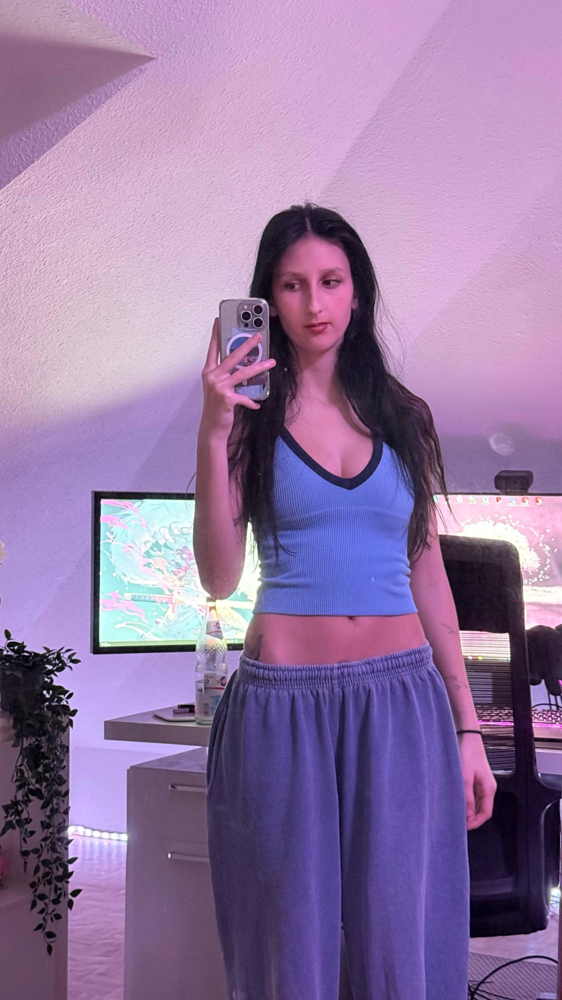
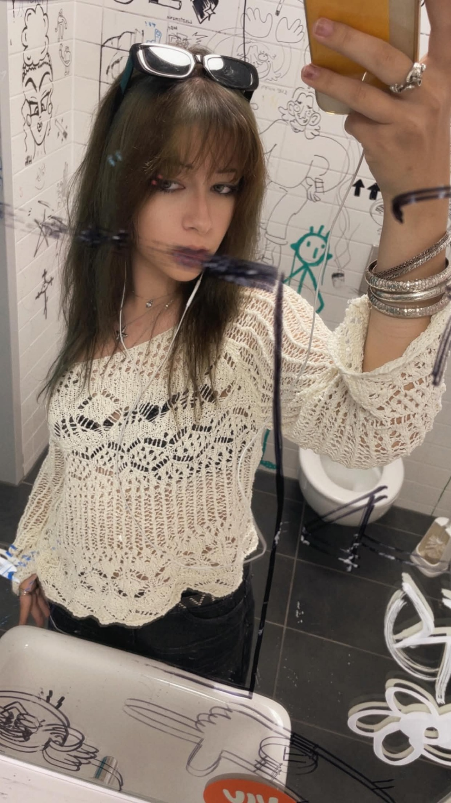
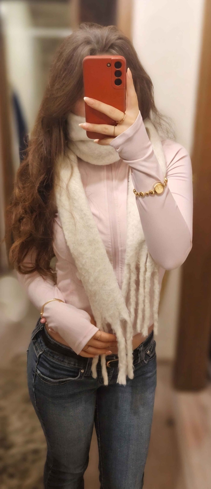

Unsere Leitung

OWNERIN · GRÜNDERIN
Lutz
SSO: Anna Strawberryray
Hallöchen Popöchen! :)
Ich bin Lutz, 21 Jahre alt und die Gründerin und Besitzerin der Platino Ladies – oder kurz: der Plat’s! In Star Stable Online bin ich gleich mit vier Accounts unterwegs: Mein Hauptaccount heißt Anna Strawberryray. Mit ihm habe ich auch die Platino Ladies gegründet. Dazu kommen Ane Strawberryray, Emma Ghostray und Savannah Pandadragon.
SSO spiele ich schon seit Anfang 2017. In dieser Zeit habe ich mehrere Clubs gegründet und sowohl schöne als auch schwierige Erfahrungen gesammelt. Einige Projekte sind damals an fehlender Zeit oder Motivation gescheitert. Umso glücklicher bin ich heute, dass die Platino Ladies zu einem so großen Teil meines Lebens geworden sind und sich alles so toll entwickelt hat!
Abseits von SSO verbringe ich viel Zeit mit meinem Hund, meinem Kater und meinem kleinen Teddyhamster. Außerdem spiele ich gerne andere Games – vor allem Valorant. Ich würde mich als freundlich und hilfsbereit beschreiben und bin immer für einen Spaß zu haben! :D
Das war’s erst mal von mir! Falls du Fragen hast, melde dich gerne bei mir auf Instagram. :3
Liebe Grüße
Lutz <3
LEADERIN
Leo
SSO: Leoni Skyleaf
Hellow! Ich bin Leo, auch bekannt als Leoni Skyleaf, bin 20 Jahre alt und mache gerade eine Ausbildung. Star Stable Online spiele ich schon seit 2017. Seit dem 05.02.2024 bin ich Teil der Platino Ladies und könnte darüber nicht glücklicher sein!
In meiner Freizeit lese ich gerne. Wenn ich etwas mehr Zeit habe, spiele ich auch andere Games, zum Beispiel Assassin’s Creed oder gelegentlich ein paar Horrorspiele.
Ich bin eher eine ruhige Person, habe aber immer ein offenes Ohr für euch und stehe euch bei Problemen gerne zur Seite.
Liebe Grüße <3

LEADERIN · INSTRUCTOR
Kayzz
SSO: Pia Towerway
Huhu^^ Ich bin Kayzz, 18 Jahre jung und besuche derzeit eine Berufsfachschule für Grafik Design. Zu meinen Hobbys gehören Klavierspielen, Editieren, Zeichnen und natürlich SSO.
Ich treffe mich gerne mit Freunden: Im Sommer fahren wir oft Fahrrad, im Winter gehen wir meistens Eislaufen. Früher bin ich selbst jahrelang geritten, häufig auch auf dem Pferd meiner Mutter. Leider ist das heute aus zeitlichen Gründen und wegen der Wohnsituation nicht mehr möglich.
Ich liebe das Club- und Teamleben und bin deshalb meistens in mindestens zwei Clubs oder Teams aktiv. Außerdem telefoniere ich gerne – auch mit Leuten, die ich nur aus Teams oder Clubs kenne.
Ich liebe Nudelgerichte, auch wenn Kochen wirklich nicht zu meinen Stärken gehört. :D Ich würde mich als kreativ und verständnisvoll beschreiben. Ich erzähle gerne, kann aber genauso gut zuhören. <3

LEADERIN · INSTRUCTOR
Mo
SSO: Maja Blueberrywatcher
Hey Hey, ich bin Mo (Maja Blueberrywatcher)! ♡
Ich bin derzeit noch 17 Jahre alt und mache aktuell mein Abi, weshalb ich leider gerade wenig Zeit für SSO habe. Wenn ich nicht lerne, zeichne ich, höre Musik oder gehe ins Gym. Außerdem mache ich gerade noch meinen Motorradführerschein.
Star Stable spiele ich seit etwa 2019/2020. Seit dem 16.08.2024 bin ich Teil der Platis und genieße jeden Tag mit den Mäusen! ♡
Im Club bin ich hauptsächlich für die Competitions zuständig. Ich würde mich als offene und lebensfrohe Person beschreiben, die anderen gerne zuhört.
Neben SSO zocke ich eigentlich nur Minecraft und Roblox. Zudem bin ich immer für Coop-Games offen – zeigt mir gerne neue Spiele!
Ich freue mich, DICH kennenzulernen und hoffe, du hast eine schöne Zeit bei uns!
GaLiGrü, Mo ♡